31图试标注候选（尚未人工标注）
全部为train。预览为非GT衍生叠加图；编号是原标签行号。类别及有效域未知，参照物和目标需原图复核。官方test不在此页面。
1. cubit-v1/train/CR1_177
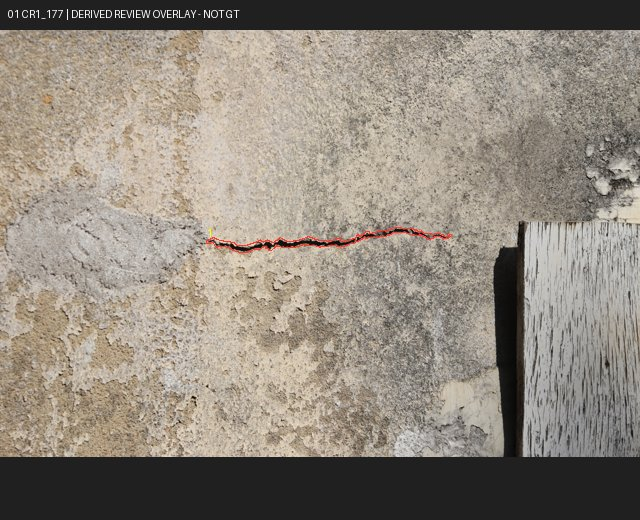
墙面单条线状损伤；近景
机会：direct_target
待复核焦点：cubit-v1/train/CR1_177/L0001/0fb8e6cfe127806a
全部实例及歧义
cubit-v1/train/CR1_177/L0001/0fb8e6cfe127806a
class_mapping_unconfirmed, annotation_completeness_unknown, building_group_unknown, semantic_reference_unverified, thumbnail_only_review, same_building_possible, reference_not_annotated
2. cubit-v1/train/CR1_40
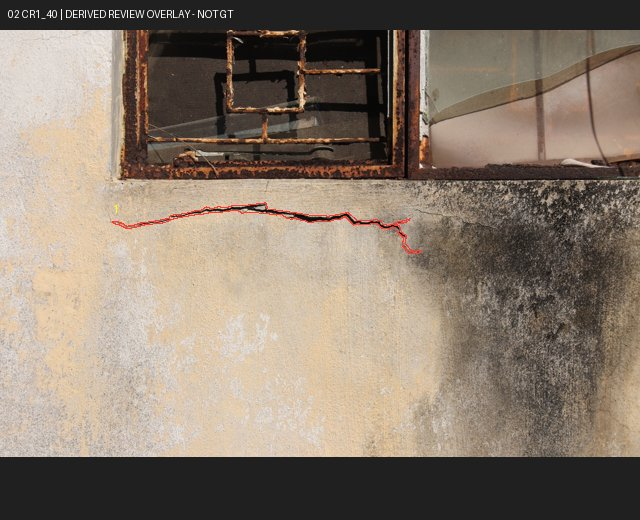
窗框下方单条线状损伤；可检查窗框参照
机会：direct_target, spatial_or_visual_semantic_review
待复核焦点：cubit-v1/train/CR1_40/L0001/5cfa457806e943b2
全部实例及歧义
cubit-v1/train/CR1_40/L0001/5cfa457806e943b2
class_mapping_unconfirmed, annotation_completeness_unknown, building_group_unknown, semantic_reference_unverified, thumbnail_only_review, same_building_possible, reference_not_annotated
7. cubit-v1/train/CR1_663
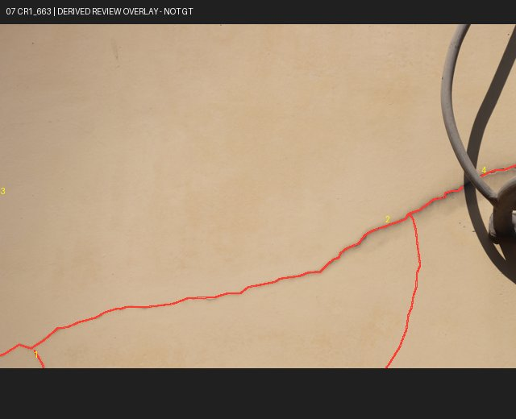
管线旁分叉线状损伤
机会：direct_target, position_reference, spatial_or_visual_semantic_review
待复核焦点：cubit-v1/train/CR1_663/L0001/9b8e81e3f0dc055c
全部实例及歧义
cubit-v1/train/CR1_663/L0001/9b8e81e3f0dc055c
cubit-v1/train/CR1_663/L0002/8c97115e4593a6ec
cubit-v1/train/CR1_663/L0003/c72e721299605c07
cubit-v1/train/CR1_663/L0004/417d06c32961f325
class_mapping_unconfirmed, annotation_completeness_unknown, building_group_unknown, semantic_reference_unverified, thumbnail_only_review, same_building_possible, reference_not_annotated
8. cubit-v1/train/CR1_3099
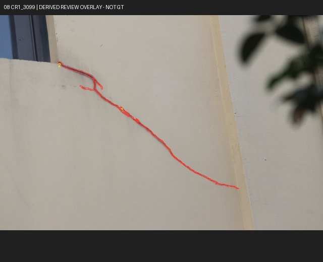
管线与叶影附近线状损伤；阴影干扰
机会：direct_target, position_reference, spatial_or_visual_semantic_review
待复核焦点：cubit-v1/train/CR1_3099/L0001/2a634bf357d130e7
全部实例及歧义
cubit-v1/train/CR1_3099/L0001/2a634bf357d130e7
cubit-v1/train/CR1_3099/L0002/b42360e0b9ee5a7c
class_mapping_unconfirmed, annotation_completeness_unknown, building_group_unknown, semantic_reference_unverified, thumbnail_only_review, same_building_possible, reference_not_annotated
9. cubit-v1/train/CR1_2043
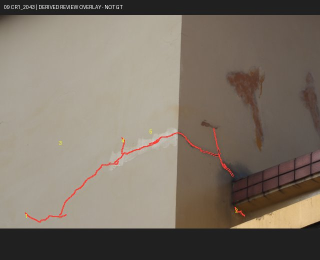
墙角和横梁附近两段线状损伤
机会：direct_target, position_reference, spatial_or_visual_semantic_review
待复核焦点：cubit-v1/train/CR1_2043/L0001/79e39b7c4566bf63
全部实例及歧义
cubit-v1/train/CR1_2043/L0001/79e39b7c4566bf63
cubit-v1/train/CR1_2043/L0002/95fb7af281b3b103
cubit-v1/train/CR1_2043/L0003/c4d68e62af79c82d
cubit-v1/train/CR1_2043/L0004/067871cf4ae94b3b
cubit-v1/train/CR1_2043/L0005/eea405ebecb956cf
class_mapping_unconfirmed, annotation_completeness_unknown, building_group_unknown, semantic_reference_unverified, thumbnail_only_review, same_building_possible, reference_not_annotated
10. cubit-v1/train/CR1_315
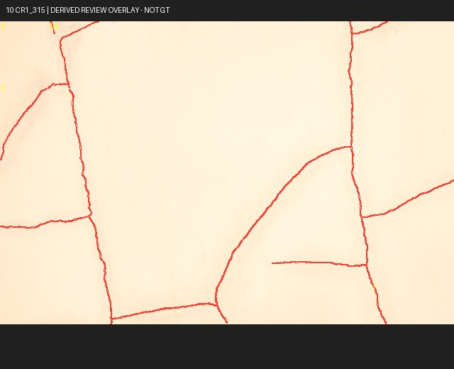
多分支线状损伤；需定义完整目标集合
机会：direct_target, position_reference
待复核焦点：cubit-v1/train/CR1_315/L0001/fa7b43e18b02a575
全部实例及歧义
cubit-v1/train/CR1_315/L0001/fa7b43e18b02a575
cubit-v1/train/CR1_315/L0002/9b7974f4f461cef4
cubit-v1/train/CR1_315/L0003/5a1d1e5bbebf8f9e
cubit-v1/train/CR1_315/L0004/733f7379a0163e29
cubit-v1/train/CR1_315/L0005/f5a9f375d1bd65c5
class_mapping_unconfirmed, annotation_completeness_unknown, building_group_unknown, semantic_reference_unverified, thumbnail_only_review, same_building_possible, reference_not_annotated
11. cubit-v1/train/CR1_140
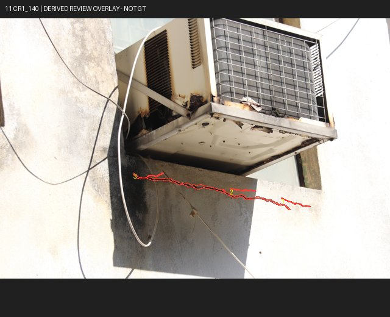
空调下方线状损伤；遮挡与线缆干扰
机会：direct_target, position_reference, spatial_or_visual_semantic_review
待复核焦点：cubit-v1/train/CR1_140/L0001/b5ff4b200360eee5
全部实例及歧义
cubit-v1/train/CR1_140/L0001/b5ff4b200360eee5
cubit-v1/train/CR1_140/L0002/380de7bf05a779cc
cubit-v1/train/CR1_140/L0003/c8704a1111a5e5ea
class_mapping_unconfirmed, annotation_completeness_unknown, building_group_unknown, semantic_reference_unverified, thumbnail_only_review, same_building_possible, reference_not_annotated
12. cubit-v1/train/CR1_6
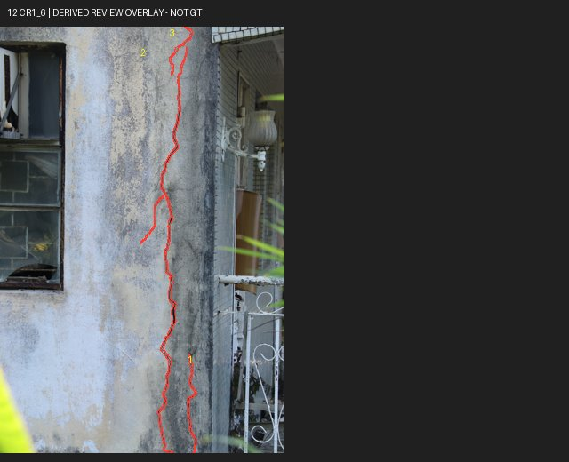
窗与管线旁竖向线状损伤
机会：direct_target, position_reference, spatial_or_visual_semantic_review
待复核焦点：cubit-v1/train/CR1_6/L0001/1c76af02e7583ee1
全部实例及歧义
cubit-v1/train/CR1_6/L0001/1c76af02e7583ee1
cubit-v1/train/CR1_6/L0002/f4a9cc4b703e417e
cubit-v1/train/CR1_6/L0003/f3509f178395aab8
class_mapping_unconfirmed, annotation_completeness_unknown, building_group_unknown, semantic_reference_unverified, thumbnail_only_review, same_building_possible, reference_not_annotated
13. cubit-v1/train/CR1_1775
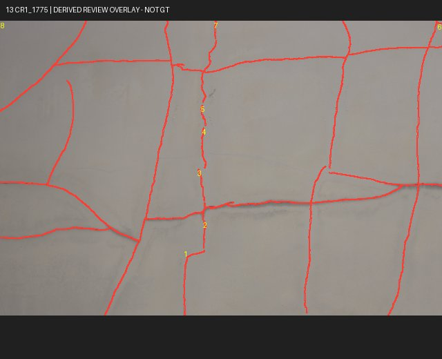
网状线状损伤；碎片实例歧义
机会：direct_target, position_reference
待复核焦点：cubit-v1/train/CR1_1775/L0001/bcc9bed5f91c7af2
全部实例及歧义
cubit-v1/train/CR1_1775/L0001/bcc9bed5f91c7af2
cubit-v1/train/CR1_1775/L0002/64df8cba0d427d22
cubit-v1/train/CR1_1775/L0003/4c07b9de79822c05
cubit-v1/train/CR1_1775/L0004/f3bbc20a5fe9b331
cubit-v1/train/CR1_1775/L0005/e1a5e05dfa9541c6
cubit-v1/train/CR1_1775/L0006/9868568c466e283a
cubit-v1/train/CR1_1775/L0007/c21d54b86cfb63a3
cubit-v1/train/CR1_1775/L0008/ac8da3c365c1a309
class_mapping_unconfirmed, annotation_completeness_unknown, building_group_unknown, semantic_reference_unverified, thumbnail_only_review, same_building_possible, reference_not_annotated
14. cubit-v1/train/CR1_648
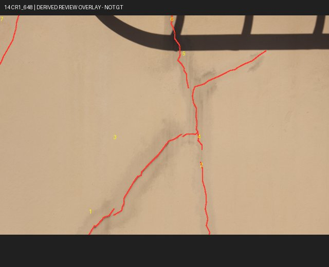
梁下交叉线状损伤
机会：direct_target, position_reference, spatial_or_visual_semantic_review
待复核焦点：cubit-v1/train/CR1_648/L0001/bc8cf44c204334be
全部实例及歧义
cubit-v1/train/CR1_648/L0001/bc8cf44c204334be
cubit-v1/train/CR1_648/L0002/9d3d8146aeff0d77
cubit-v1/train/CR1_648/L0003/ae7e59a2c4e77bea
cubit-v1/train/CR1_648/L0004/2d6215660b934792
cubit-v1/train/CR1_648/L0005/9fd88a4920145b50
cubit-v1/train/CR1_648/L0006/7acd9cc2a6807f5a
cubit-v1/train/CR1_648/L0007/a14f96773368f1e8
class_mapping_unconfirmed, annotation_completeness_unknown, building_group_unknown, semantic_reference_unverified, thumbnail_only_review, same_building_possible, reference_not_annotated
15. cubit-v1/train/CR1_1699
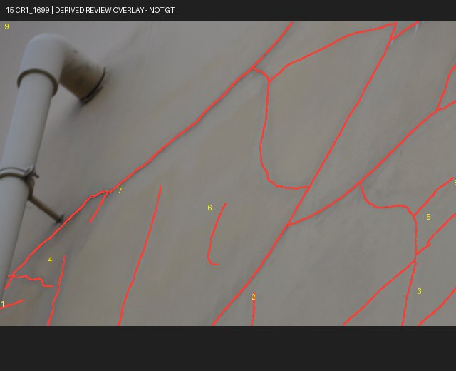
管道旁多条斜向线状损伤
机会：direct_target, position_reference, spatial_or_visual_semantic_review
待复核焦点：cubit-v1/train/CR1_1699/L0001/aea2a76d3ee17a92
全部实例及歧义
cubit-v1/train/CR1_1699/L0001/aea2a76d3ee17a92
cubit-v1/train/CR1_1699/L0002/d1d320503213a2ce
cubit-v1/train/CR1_1699/L0003/f7d3f9e7cbea0662
cubit-v1/train/CR1_1699/L0004/bb6051f01fbe0d95
cubit-v1/train/CR1_1699/L0005/692f44c9e0db0bc3
cubit-v1/train/CR1_1699/L0006/b665f9d7d2e6b74d
cubit-v1/train/CR1_1699/L0007/572bf509e7964b73
cubit-v1/train/CR1_1699/L0008/17085f391a97fe98
cubit-v1/train/CR1_1699/L0009/c4204edab5a2b67a
class_mapping_unconfirmed, annotation_completeness_unknown, building_group_unknown, semantic_reference_unverified, thumbnail_only_review, same_building_possible, reference_not_annotated
16. cubit-v1/train/CR1_2357
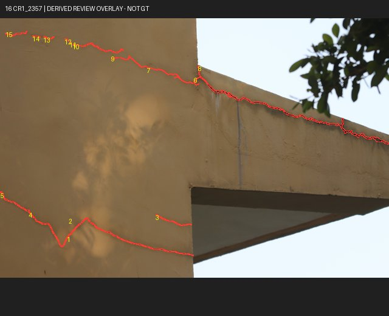
屋顶梁边缘损伤；截断
机会：direct_target, position_reference
待复核焦点：cubit-v1/train/CR1_2357/L0001/d9b0607d4d2cd489
全部实例及歧义
cubit-v1/train/CR1_2357/L0001/d9b0607d4d2cd489
cubit-v1/train/CR1_2357/L0002/4d788ab8af69728f
cubit-v1/train/CR1_2357/L0003/6306b5de7e6758e7
cubit-v1/train/CR1_2357/L0004/29fe1aa58bb42d52
cubit-v1/train/CR1_2357/L0005/0ac00e197e8a32aa
cubit-v1/train/CR1_2357/L0006/c5cb2512dc6b8b3a
cubit-v1/train/CR1_2357/L0007/31a69517f6dd684b
cubit-v1/train/CR1_2357/L0008/49635d639a6361d2
cubit-v1/train/CR1_2357/L0009/9bfd010daccc43e4
cubit-v1/train/CR1_2357/L0010/d9ec9d3d8dbe4d99
cubit-v1/train/CR1_2357/L0011/875a75bd9e06e6ee
cubit-v1/train/CR1_2357/L0012/7ed4cf34a4e97983
cubit-v1/train/CR1_2357/L0013/511de99e3dd2e59e
cubit-v1/train/CR1_2357/L0014/6730db86228e56da
cubit-v1/train/CR1_2357/L0015/750b88173280456e
class_mapping_unconfirmed, annotation_completeness_unknown, building_group_unknown, semantic_reference_unverified, thumbnail_only_review, same_building_possible, reference_not_annotated
17. cubit-v1/train/CR1_103
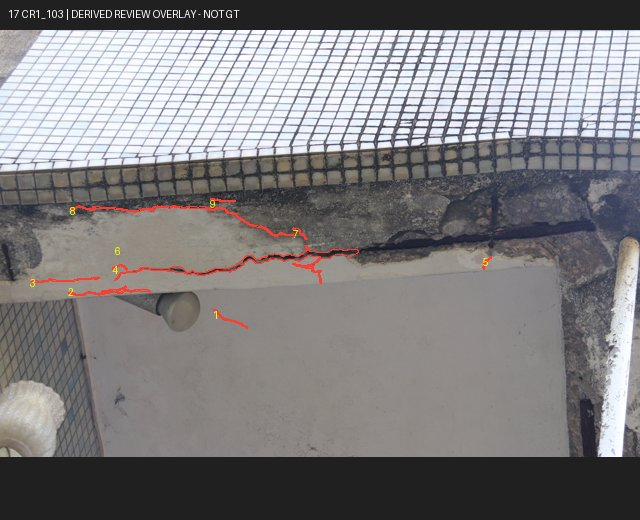
梁底与灯具附近多条线状损伤
机会：direct_target, position_reference, spatial_or_visual_semantic_review
待复核焦点：cubit-v1/train/CR1_103/L0001/ea3c7e01d6ac217e
全部实例及歧义
cubit-v1/train/CR1_103/L0001/ea3c7e01d6ac217e
cubit-v1/train/CR1_103/L0002/a26be11da526f8de
cubit-v1/train/CR1_103/L0003/6ec9f5b51c01b46a
cubit-v1/train/CR1_103/L0004/d722947522dbb22f
cubit-v1/train/CR1_103/L0005/1e2ecc3f769063dd
cubit-v1/train/CR1_103/L0006/0bd15192db3ac0bb
cubit-v1/train/CR1_103/L0007/65f7391f88a5d729
cubit-v1/train/CR1_103/L0008/3a88eb42ff836f25
cubit-v1/train/CR1_103/L0009/378ea106434baaf2
class_mapping_unconfirmed, annotation_completeness_unknown, building_group_unknown, semantic_reference_unverified, thumbnail_only_review, same_building_possible, reference_not_annotated
18. cubit-v1/train/CR1_3142
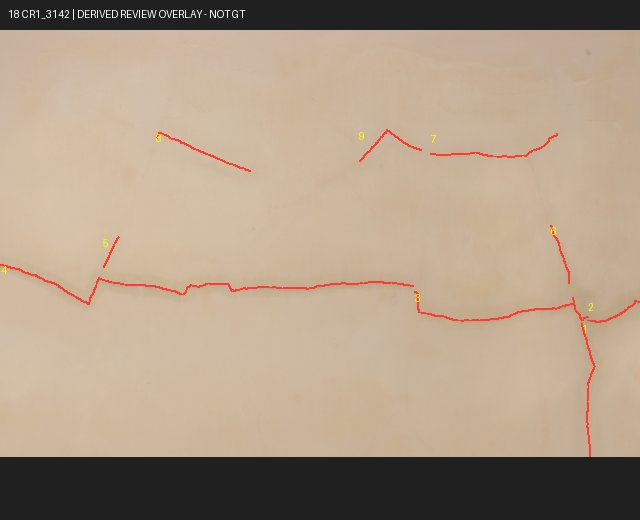
裸墙多段损伤；位置比较
机会：direct_target, position_reference
待复核焦点：cubit-v1/train/CR1_3142/L0001/d0d1b17f90f31236
全部实例及歧义
cubit-v1/train/CR1_3142/L0001/d0d1b17f90f31236
cubit-v1/train/CR1_3142/L0002/17e40b7921440fa8
cubit-v1/train/CR1_3142/L0003/95414e9b573c1032
cubit-v1/train/CR1_3142/L0004/27c3f408cc2058e8
cubit-v1/train/CR1_3142/L0005/bbe38c290e1963f5
cubit-v1/train/CR1_3142/L0006/43e6d4ef56e29390
cubit-v1/train/CR1_3142/L0007/688f714327487a65
cubit-v1/train/CR1_3142/L0008/268ef25aa6a95b14
cubit-v1/train/CR1_3142/L0009/96f12cfdd6d03e35
class_mapping_unconfirmed, annotation_completeness_unknown, building_group_unknown, semantic_reference_unverified, thumbnail_only_review, same_building_possible, reference_not_annotated
19. cubit-v1/train/CR1_1367
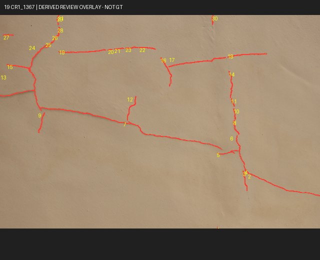
网状损伤；内部实例过碎
机会：direct_target, position_reference
待复核焦点：cubit-v1/train/CR1_1367/L0001/e2d271a6f1ea6c6f
全部实例及歧义
cubit-v1/train/CR1_1367/L0001/e2d271a6f1ea6c6f
cubit-v1/train/CR1_1367/L0002/f2c360e5f14d53e4
cubit-v1/train/CR1_1367/L0003/ece7414dda0f9018
cubit-v1/train/CR1_1367/L0004/8c03300692c466e8
cubit-v1/train/CR1_1367/L0005/3337d4cda057207a
cubit-v1/train/CR1_1367/L0006/0eae00a68c60e658
cubit-v1/train/CR1_1367/L0007/951c1085a988c4cf
cubit-v1/train/CR1_1367/L0008/e5e071b60a6b84de
cubit-v1/train/CR1_1367/L0009/bb8e92227f818ca6
cubit-v1/train/CR1_1367/L0010/b850839db65fdaa2
cubit-v1/train/CR1_1367/L0011/5499363cd2e5b8f3
cubit-v1/train/CR1_1367/L0012/36c7f9ee65fa0470
cubit-v1/train/CR1_1367/L0013/4ac10d429a28c43a
cubit-v1/train/CR1_1367/L0014/944beef4ff2ac949
cubit-v1/train/CR1_1367/L0015/74c77915dc64d5e3
cubit-v1/train/CR1_1367/L0016/7bc28d67bf1da32c
cubit-v1/train/CR1_1367/L0017/ba4016dbc9bbee88
cubit-v1/train/CR1_1367/L0018/30086b5540af15c8
cubit-v1/train/CR1_1367/L0019/0d0db992e5ebbf79
cubit-v1/train/CR1_1367/L0020/566283be9eca263d
cubit-v1/train/CR1_1367/L0021/f4d062787bbecabe
cubit-v1/train/CR1_1367/L0022/3bdaf1e71f51ef26
cubit-v1/train/CR1_1367/L0023/e988a92d64ab7e90
cubit-v1/train/CR1_1367/L0024/bb3d54a22680752e
cubit-v1/train/CR1_1367/L0025/9b1ef2cf493d983c
cubit-v1/train/CR1_1367/L0026/586b911912a0cb75
cubit-v1/train/CR1_1367/L0027/2ac60972340ac1ea
cubit-v1/train/CR1_1367/L0028/2e1fda4fd8371a67
cubit-v1/train/CR1_1367/L0029/83293261a05ebe37
cubit-v1/train/CR1_1367/L0030/eff2394c2af7b687
cubit-v1/train/CR1_1367/L0031/2eb6ce09c5854b94
class_mapping_unconfirmed, annotation_completeness_unknown, building_group_unknown, semantic_reference_unverified, thumbnail_only_review, same_building_possible, reference_not_annotated
20. cubit-v1/train/CR1_1355
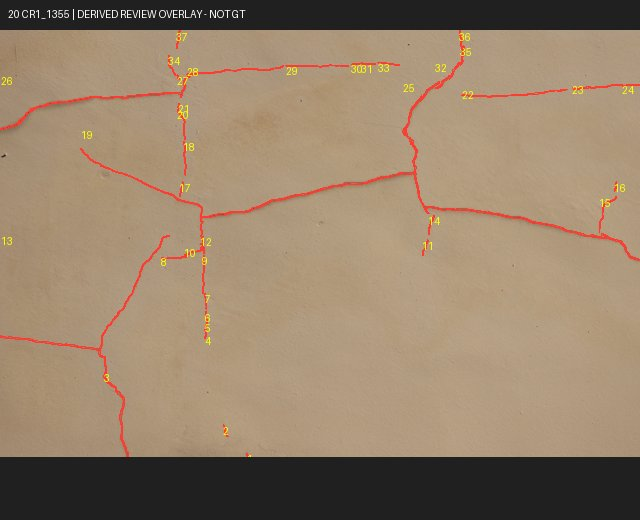
网状损伤；上下/左右需唯一性复核
机会：direct_target, position_reference
待复核焦点：cubit-v1/train/CR1_1355/L0001/f40c1af7a51ce42a
全部实例及歧义
cubit-v1/train/CR1_1355/L0001/f40c1af7a51ce42a
cubit-v1/train/CR1_1355/L0002/e01ffd174d455e40
cubit-v1/train/CR1_1355/L0003/737a74a38ceb31f9
cubit-v1/train/CR1_1355/L0004/c00ce6a08c5a6264
cubit-v1/train/CR1_1355/L0005/a1b587ddbc89a4f9
cubit-v1/train/CR1_1355/L0006/2edeb8f0a5a8f822
cubit-v1/train/CR1_1355/L0007/31c78161d144f96d
cubit-v1/train/CR1_1355/L0008/8efea2fc093cc772
cubit-v1/train/CR1_1355/L0009/67a0a1083d417886
cubit-v1/train/CR1_1355/L0010/25399eeb90425dc3
cubit-v1/train/CR1_1355/L0011/78eeee8d119572d2
cubit-v1/train/CR1_1355/L0012/c344b4b47c2c77f7
cubit-v1/train/CR1_1355/L0013/d15a41c5b5677b97
cubit-v1/train/CR1_1355/L0014/de1fb29e285acafd
cubit-v1/train/CR1_1355/L0015/ff080ad1762b2a43
cubit-v1/train/CR1_1355/L0016/6a3e3508ca0bd0b2
cubit-v1/train/CR1_1355/L0017/fd95c1393da694bf
cubit-v1/train/CR1_1355/L0018/a31b7bf1998892c2
cubit-v1/train/CR1_1355/L0019/3d8b793961548ccb
cubit-v1/train/CR1_1355/L0020/2ca7fc99580169f2
cubit-v1/train/CR1_1355/L0021/9e676520800d9020
cubit-v1/train/CR1_1355/L0022/600a96f59a306b05
cubit-v1/train/CR1_1355/L0023/710ffd289f4ec5b1
cubit-v1/train/CR1_1355/L0024/e82116a02b591450
cubit-v1/train/CR1_1355/L0025/0b6c381f4ff9cf33
cubit-v1/train/CR1_1355/L0026/439cc5bcad6e48cb
cubit-v1/train/CR1_1355/L0027/8983c6ac3dd68b99
cubit-v1/train/CR1_1355/L0028/da78d71f5851f6a7
cubit-v1/train/CR1_1355/L0029/4c75f95cc478ea46
cubit-v1/train/CR1_1355/L0030/bfb46a903608b9af
cubit-v1/train/CR1_1355/L0031/ec22dccdfd222c46
cubit-v1/train/CR1_1355/L0032/24eb32e60d2394e5
cubit-v1/train/CR1_1355/L0033/491fbf0311937bf4
cubit-v1/train/CR1_1355/L0034/661794a0be9571d2
cubit-v1/train/CR1_1355/L0035/05267496d57c0357
cubit-v1/train/CR1_1355/L0036/cdd370ce7d8446b2
cubit-v1/train/CR1_1355/L0037/8b9a02d717bc78d3
class_mapping_unconfirmed, annotation_completeness_unknown, building_group_unknown, semantic_reference_unverified, thumbnail_only_review, same_building_possible, reference_not_annotated
21. cubit-v1/train/CR1_1560
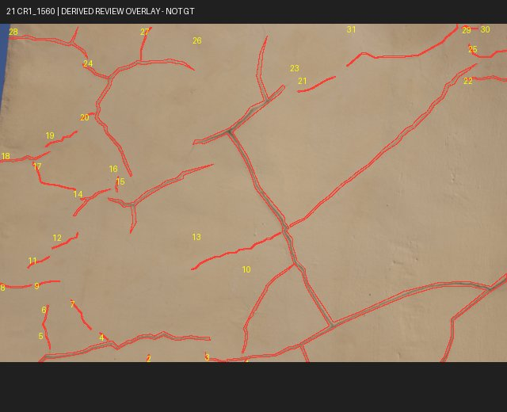
多分支损伤；替代解释较多
机会：direct_target, position_reference
待复核焦点：cubit-v1/train/CR1_1560/L0001/2cd4057c5343f0dc
全部实例及歧义
cubit-v1/train/CR1_1560/L0001/2cd4057c5343f0dc
cubit-v1/train/CR1_1560/L0002/9772cd9e86f47e9d
cubit-v1/train/CR1_1560/L0003/68553eb5ab820947
cubit-v1/train/CR1_1560/L0004/27a35e626deec11c
cubit-v1/train/CR1_1560/L0005/dab9820ecb05ab83
cubit-v1/train/CR1_1560/L0006/a09fde2e1d10ba88
cubit-v1/train/CR1_1560/L0007/56533ec6e1d73f41
cubit-v1/train/CR1_1560/L0008/17b456099add0d3f
cubit-v1/train/CR1_1560/L0009/01a61479c2441515
cubit-v1/train/CR1_1560/L0010/db8d0b1cebb2c46f
cubit-v1/train/CR1_1560/L0011/7394d7d795a025c6
cubit-v1/train/CR1_1560/L0012/b9d3d16060f0f6f4
cubit-v1/train/CR1_1560/L0013/2b82e9e6ec48a1fe
cubit-v1/train/CR1_1560/L0014/feacfc12f6858e41
cubit-v1/train/CR1_1560/L0015/e497860ed47506bf
cubit-v1/train/CR1_1560/L0016/ba0999cc2991bc95
cubit-v1/train/CR1_1560/L0017/d2975ac404e9d166
cubit-v1/train/CR1_1560/L0018/2ad71125c79454ca
cubit-v1/train/CR1_1560/L0019/9e0024622c7b9c83
cubit-v1/train/CR1_1560/L0020/b4513d9b4d57f590
cubit-v1/train/CR1_1560/L0021/24dd1670b81fd094
cubit-v1/train/CR1_1560/L0022/3828a0df4ea22038
cubit-v1/train/CR1_1560/L0023/52fa2be70a9a1454
cubit-v1/train/CR1_1560/L0024/16f6c00d859b8b62
cubit-v1/train/CR1_1560/L0025/19b3fd09c9559421
cubit-v1/train/CR1_1560/L0026/376e4a082af58b9a
cubit-v1/train/CR1_1560/L0027/b060fb2128bb9b5f
cubit-v1/train/CR1_1560/L0028/0d740c44bebcec4d
cubit-v1/train/CR1_1560/L0029/48c8ab2d54f8abb1
cubit-v1/train/CR1_1560/L0030/7abe7caa1a74a3bc
cubit-v1/train/CR1_1560/L0031/d41c6a409ccd9f21
class_mapping_unconfirmed, annotation_completeness_unknown, building_group_unknown, semantic_reference_unverified, thumbnail_only_review, same_building_possible, reference_not_annotated
22. cubit-v1/train/CR1_1312
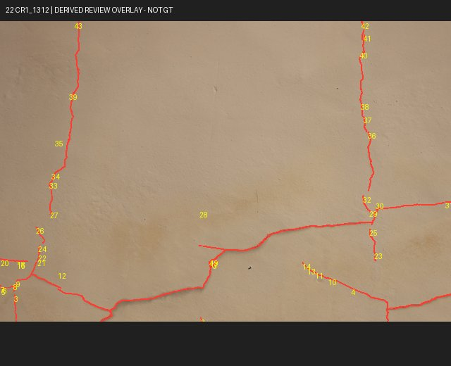
竖向主线与下部分支；部件完整性待定
机会：direct_target, position_reference
待复核焦点：cubit-v1/train/CR1_1312/L0001/9c013afa9b791c1a
全部实例及歧义
cubit-v1/train/CR1_1312/L0001/9c013afa9b791c1a
cubit-v1/train/CR1_1312/L0002/ad7132fe091319d0
cubit-v1/train/CR1_1312/L0003/50a364fd007c6618
cubit-v1/train/CR1_1312/L0004/bfa63ce2049116a3
cubit-v1/train/CR1_1312/L0005/04e584ac89c2948d
cubit-v1/train/CR1_1312/L0006/74f27f100741b72b
cubit-v1/train/CR1_1312/L0007/6a51f823bfca4e5d
cubit-v1/train/CR1_1312/L0008/47f79ab51362806b
cubit-v1/train/CR1_1312/L0009/ae8b23a4dc50ae9c
cubit-v1/train/CR1_1312/L0010/03f0a473e616ebe8
cubit-v1/train/CR1_1312/L0011/799ef05cbfa4883a
cubit-v1/train/CR1_1312/L0012/914955ad1d89add9
cubit-v1/train/CR1_1312/L0013/c76a96d92c3004f0
cubit-v1/train/CR1_1312/L0014/5f524104dba59d48
cubit-v1/train/CR1_1312/L0015/2ff4a96b9fa3b62b
cubit-v1/train/CR1_1312/L0016/a90b593243ae97ea
cubit-v1/train/CR1_1312/L0017/21285942121ffeae
cubit-v1/train/CR1_1312/L0018/4bb1b10f3b83175d
cubit-v1/train/CR1_1312/L0019/1b419c0bab3f6adf
cubit-v1/train/CR1_1312/L0020/62eb4d5cec65f150
cubit-v1/train/CR1_1312/L0021/af8e0c78a3034a0c
cubit-v1/train/CR1_1312/L0022/7089ff0a73e06df8
cubit-v1/train/CR1_1312/L0023/ced5b02d23ac6528
cubit-v1/train/CR1_1312/L0024/ad6708392174363c
cubit-v1/train/CR1_1312/L0025/c2bd03cadb3dc7b3
cubit-v1/train/CR1_1312/L0026/46fb96fe3482a065
cubit-v1/train/CR1_1312/L0027/f7b8e1a8f8f19c85
cubit-v1/train/CR1_1312/L0028/f3d981591201d16c
cubit-v1/train/CR1_1312/L0029/e63742bfa943d541
cubit-v1/train/CR1_1312/L0030/89abe173e7a74fa8
cubit-v1/train/CR1_1312/L0031/05573faa7d190d7f
cubit-v1/train/CR1_1312/L0032/70e8a40a0cc69074
cubit-v1/train/CR1_1312/L0033/78ca91b5480b727a
cubit-v1/train/CR1_1312/L0034/d91ac2e3d2247779
cubit-v1/train/CR1_1312/L0035/fecd7e09928e5487
cubit-v1/train/CR1_1312/L0036/1247d7c73282e356
cubit-v1/train/CR1_1312/L0037/5ce2cfbcc001cd19
cubit-v1/train/CR1_1312/L0038/23f1adba939b4809
cubit-v1/train/CR1_1312/L0039/fdffdcd3d6f01383
cubit-v1/train/CR1_1312/L0040/9fe567a0d120d73d
cubit-v1/train/CR1_1312/L0041/01fc59dc794a399f
cubit-v1/train/CR1_1312/L0042/3cc58fc64ba7f646
cubit-v1/train/CR1_1312/L0043/82a036727e95cbb3
class_mapping_unconfirmed, annotation_completeness_unknown, building_group_unknown, semantic_reference_unverified, thumbnail_only_review, same_building_possible, reference_not_annotated
23. cubit-v1/train/CR1_2311
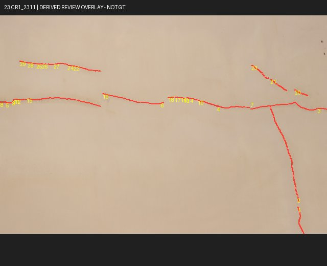
水平主线与支线；碎片化
机会：direct_target, position_reference
待复核焦点：cubit-v1/train/CR1_2311/L0001/842ecdc60015a107
全部实例及歧义
cubit-v1/train/CR1_2311/L0001/842ecdc60015a107
cubit-v1/train/CR1_2311/L0002/757e642265491968
cubit-v1/train/CR1_2311/L0003/5d284c359d0579b7
cubit-v1/train/CR1_2311/L0004/86f984785f1b957c
cubit-v1/train/CR1_2311/L0005/f8506691714da534
cubit-v1/train/CR1_2311/L0006/cd39ddcb5aa5fb6e
cubit-v1/train/CR1_2311/L0007/aad18b3fb3c20618
cubit-v1/train/CR1_2311/L0008/a9d4a73122e9838a
cubit-v1/train/CR1_2311/L0009/9431995c9c2f083c
cubit-v1/train/CR1_2311/L0010/baa321877d255750
cubit-v1/train/CR1_2311/L0011/eb8aa03bbfd2ade3
cubit-v1/train/CR1_2311/L0012/a117a8e593599de3
cubit-v1/train/CR1_2311/L0013/8fe54046706cb922
cubit-v1/train/CR1_2311/L0014/ef5cbb832ebcfa68
cubit-v1/train/CR1_2311/L0015/bd560f33cee062a7
cubit-v1/train/CR1_2311/L0016/94a4a977fe19d188
cubit-v1/train/CR1_2311/L0017/f65c0be9e44e4899
cubit-v1/train/CR1_2311/L0018/929f1f78688c8830
cubit-v1/train/CR1_2311/L0019/f81217f225f6b083
cubit-v1/train/CR1_2311/L0020/5d8159d4f7196119
cubit-v1/train/CR1_2311/L0021/83c7ff733854fbf6
cubit-v1/train/CR1_2311/L0022/cab25f7adc68ffc0
cubit-v1/train/CR1_2311/L0023/6a9dd0c429643e24
cubit-v1/train/CR1_2311/L0024/b65998413c8bb8f6
cubit-v1/train/CR1_2311/L0025/4833cccb52253d76
cubit-v1/train/CR1_2311/L0026/bc5a860c979baea9
cubit-v1/train/CR1_2311/L0027/47c3c66af0ea92ab
cubit-v1/train/CR1_2311/L0028/5d16952068bc36a2
cubit-v1/train/CR1_2311/L0029/cd43536d107fb991
class_mapping_unconfirmed, annotation_completeness_unknown, building_group_unknown, semantic_reference_unverified, thumbnail_only_review, same_building_possible, reference_not_annotated
24. cubit-v1/train/CR1_1466
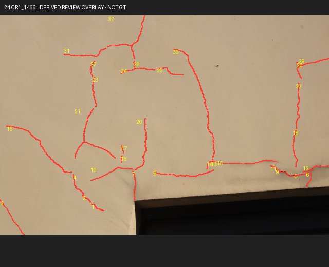
开口上沿网状损伤；边缘截断
机会：direct_target, position_reference, spatial_or_visual_semantic_review
待复核焦点：cubit-v1/train/CR1_1466/L0001/0bbd1babb4c03f70
全部实例及歧义
cubit-v1/train/CR1_1466/L0001/0bbd1babb4c03f70
cubit-v1/train/CR1_1466/L0002/32c10dd2ac0c321c
cubit-v1/train/CR1_1466/L0003/654b66808d1a4776
cubit-v1/train/CR1_1466/L0004/6f9ab6db78251c99
cubit-v1/train/CR1_1466/L0005/b020e74b75b21655
cubit-v1/train/CR1_1466/L0006/cff4d098740142c1
cubit-v1/train/CR1_1466/L0007/659eb261beb2a4f9
cubit-v1/train/CR1_1466/L0008/31e2a2f9c418932c
cubit-v1/train/CR1_1466/L0009/d55cedc3c44bf6b2
cubit-v1/train/CR1_1466/L0010/ff43adce1847cc08
cubit-v1/train/CR1_1466/L0011/17807e61039d6025
cubit-v1/train/CR1_1466/L0012/fdc5b945a13d0d1d
cubit-v1/train/CR1_1466/L0013/c58454a933ffacb0
cubit-v1/train/CR1_1466/L0014/8e7f601a33dc9935
cubit-v1/train/CR1_1466/L0015/9cea259fcb1ed94e
cubit-v1/train/CR1_1466/L0016/637d0160731db6e3
cubit-v1/train/CR1_1466/L0017/d1c14686bde93733
cubit-v1/train/CR1_1466/L0018/9f109e0b1e21cdf9
cubit-v1/train/CR1_1466/L0019/2240fd0f03d8ca79
cubit-v1/train/CR1_1466/L0020/ace7f99365da9aa6
cubit-v1/train/CR1_1466/L0021/0a0bbd681612bdff
cubit-v1/train/CR1_1466/L0022/e6f34a9f27c16567
cubit-v1/train/CR1_1466/L0023/a95df646ff43bc8c
cubit-v1/train/CR1_1466/L0024/9e935b28032517e4
cubit-v1/train/CR1_1466/L0025/05b13f1232aa73b4
cubit-v1/train/CR1_1466/L0026/7f1c1bedab210b07
cubit-v1/train/CR1_1466/L0027/393ba84b61da2dee
cubit-v1/train/CR1_1466/L0028/e658d93f038372f8
cubit-v1/train/CR1_1466/L0029/1b16e8416ad265d1
cubit-v1/train/CR1_1466/L0030/92e5a277d9f33f6a
cubit-v1/train/CR1_1466/L0031/6505d1d991dd880f
cubit-v1/train/CR1_1466/L0032/bd4cbeb0747b280d
class_mapping_unconfirmed, annotation_completeness_unknown, building_group_unknown, semantic_reference_unverified, thumbnail_only_review, same_building_possible, reference_not_annotated
25. cubit-v1/train/SP1_1427
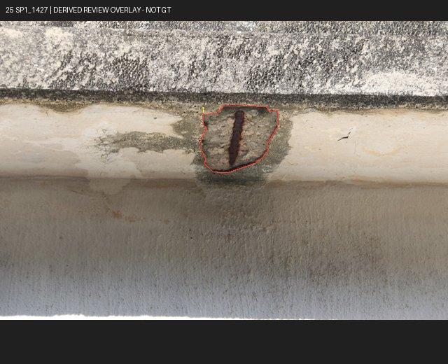
梁下单处表面缺损；近景
机会：direct_target
待复核焦点：cubit-v1/train/SP1_1427/L0001/4f95eb7652ce25f1
全部实例及歧义
cubit-v1/train/SP1_1427/L0001/4f95eb7652ce25f1
class_mapping_unconfirmed, annotation_completeness_unknown, building_group_unknown, semantic_reference_unverified, thumbnail_only_review, same_building_possible, reference_not_annotated
26. cubit-v1/train/SP0_199
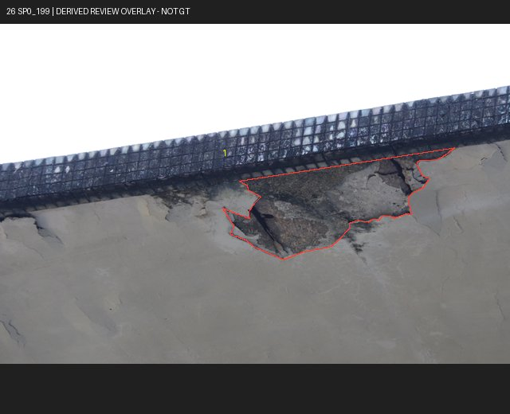
梁底长条缺损；局部遮挡
机会：direct_target
待复核焦点：cubit-v1/train/SP0_199/L0001/503259cc1337829e
全部实例及歧义
cubit-v1/train/SP0_199/L0001/503259cc1337829e
class_mapping_unconfirmed, annotation_completeness_unknown, building_group_unknown, semantic_reference_unverified, thumbnail_only_review, same_building_possible, reference_not_annotated
27. cubit-v1/train/SP0_660
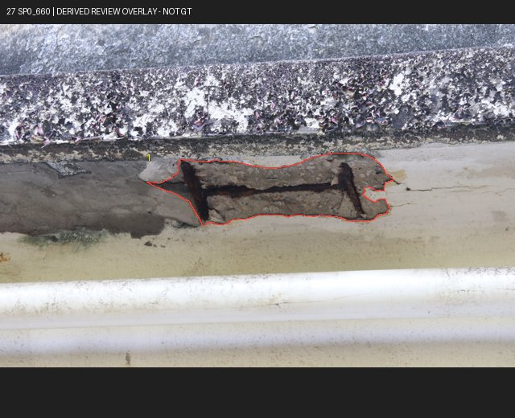
梁下单处缺损；钢筋可见
机会：direct_target
待复核焦点：cubit-v1/train/SP0_660/L0001/9f0cf92a24e62e5e
全部实例及歧义
cubit-v1/train/SP0_660/L0001/9f0cf92a24e62e5e
class_mapping_unconfirmed, annotation_completeness_unknown, building_group_unknown, semantic_reference_unverified, thumbnail_only_review, same_building_possible, reference_not_annotated
30. cubit-v1/train/SP1_1758
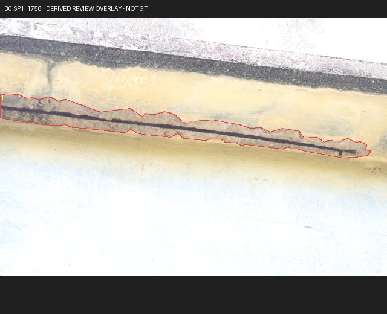
梁底细长缺损；目标边界需原图复核
机会：direct_target
待复核焦点：cubit-v1/train/SP1_1758/L0001/4f9832aeaa1a9a6d
全部实例及歧义
cubit-v1/train/SP1_1758/L0001/4f9832aeaa1a9a6d
class_mapping_unconfirmed, annotation_completeness_unknown, building_group_unknown, semantic_reference_unverified, thumbnail_only_review, same_building_possible, reference_not_annotated
31. cubit-v1/train/SP1_1133
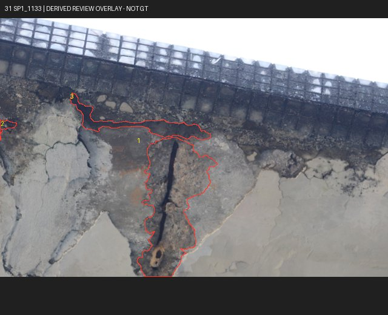
梁柱附近多处缺损；上下参照可检查
机会：direct_target, position_reference, spatial_or_visual_semantic_review
待复核焦点：cubit-v1/train/SP1_1133/L0001/5e2d3130d9922a69
全部实例及歧义
cubit-v1/train/SP1_1133/L0001/5e2d3130d9922a69
cubit-v1/train/SP1_1133/L0002/37e1821ddcdc49da
cubit-v1/train/SP1_1133/L0003/0c15105f04a475dc
class_mapping_unconfirmed, annotation_completeness_unknown, building_group_unknown, semantic_reference_unverified, thumbnail_only_review, same_building_possible, reference_not_annotated
32. cubit-v1/train/SP0_1688
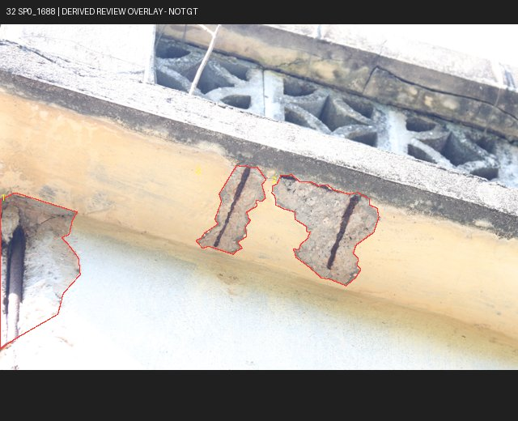
梁底多处缺损；位置可比较
机会：direct_target, position_reference
待复核焦点：cubit-v1/train/SP0_1688/L0001/7ba6ec801494cbe8
全部实例及歧义
cubit-v1/train/SP0_1688/L0001/7ba6ec801494cbe8
cubit-v1/train/SP0_1688/L0002/75cfac8ba6101efc
cubit-v1/train/SP0_1688/L0003/0e397845d5cbf71e
class_mapping_unconfirmed, annotation_completeness_unknown, building_group_unknown, semantic_reference_unverified, thumbnail_only_review, same_building_possible, reference_not_annotated
35. cubit-v1/train/SP1_436
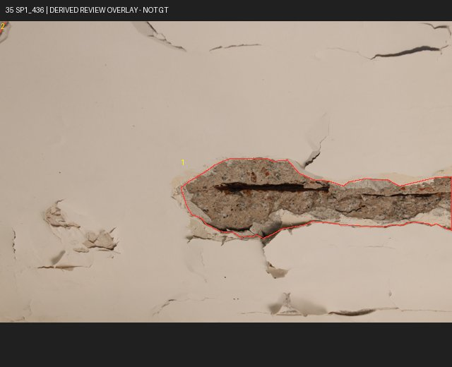
墙面缺损周围存在未圈细线；有效域未知
机会：direct_target, position_reference
待复核焦点：cubit-v1/train/SP1_436/L0001/e6e0ff85823597ec
全部实例及歧义
cubit-v1/train/SP1_436/L0001/e6e0ff85823597ec
cubit-v1/train/SP1_436/L0002/a651918e0829a086
class_mapping_unconfirmed, annotation_completeness_unknown, building_group_unknown, semantic_reference_unverified, thumbnail_only_review, same_building_possible, reference_not_annotated
36. cubit-v1/train/SP0_991
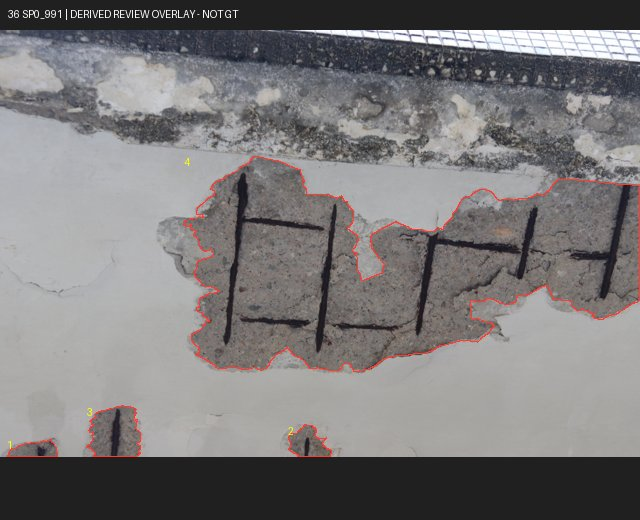
露筋缺损多实例；边界与集合需核对
机会：direct_target, position_reference
待复核焦点：cubit-v1/train/SP0_991/L0001/4290e8b57946c1fb
全部实例及歧义
cubit-v1/train/SP0_991/L0001/4290e8b57946c1fb
cubit-v1/train/SP0_991/L0002/b989180850f282a2
cubit-v1/train/SP0_991/L0003/8be5486bebc0a962
cubit-v1/train/SP0_991/L0004/852eeeaf7093a219
class_mapping_unconfirmed, annotation_completeness_unknown, building_group_unknown, semantic_reference_unverified, thumbnail_only_review, same_building_possible, reference_not_annotated
37. cubit-v1/train/SP0_70
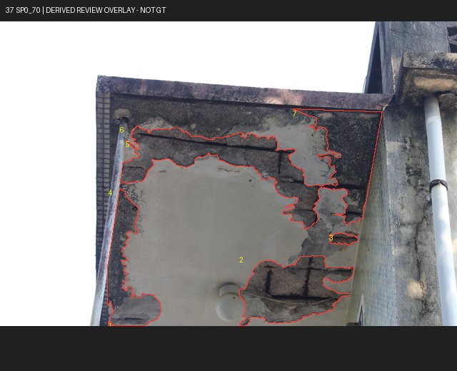
墙角及排水管旁多处缺损
机会：direct_target, position_reference, spatial_or_visual_semantic_review
待复核焦点：cubit-v1/train/SP0_70/L0001/29abdf899f8115c3
全部实例及歧义
cubit-v1/train/SP0_70/L0001/29abdf899f8115c3
cubit-v1/train/SP0_70/L0002/de7a2821462d9e10
cubit-v1/train/SP0_70/L0003/87ac1569255c414e
cubit-v1/train/SP0_70/L0004/a2369f49474a879e
cubit-v1/train/SP0_70/L0005/55a75f48bcd42209
cubit-v1/train/SP0_70/L0006/6e24223e88494d15
cubit-v1/train/SP0_70/L0007/d79a06fc84ce63d7
class_mapping_unconfirmed, annotation_completeness_unknown, building_group_unknown, semantic_reference_unverified, thumbnail_only_review, same_building_possible, reference_not_annotated
43. cubit-v1/train/CR1_2744
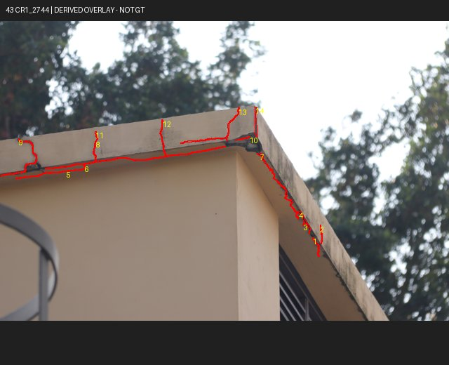
屋面梁与墙角附近线状损伤；远景
机会：direct_target, position_reference, spatial_or_visual_semantic_review
待复核焦点：cubit-v1/train/CR1_2744/L0001/b5b9dabcf694a7f0
全部实例及歧义
cubit-v1/train/CR1_2744/L0001/b5b9dabcf694a7f0
cubit-v1/train/CR1_2744/L0002/ce8bdfe18f28ce5e
cubit-v1/train/CR1_2744/L0003/842b476a8ffa7ff1
cubit-v1/train/CR1_2744/L0004/329bc1466e325013
cubit-v1/train/CR1_2744/L0005/21bc745feceabdfd
cubit-v1/train/CR1_2744/L0006/2d3ceaa0bf04d4b1
cubit-v1/train/CR1_2744/L0007/83553e03bcf480ea
cubit-v1/train/CR1_2744/L0008/c7d9746b2bb80e9f
cubit-v1/train/CR1_2744/L0009/af88189698924cc7
cubit-v1/train/CR1_2744/L0010/076d9957d1165912
cubit-v1/train/CR1_2744/L0011/83e8fd2a35e28fa6
cubit-v1/train/CR1_2744/L0012/20e0b12b909ff3de
cubit-v1/train/CR1_2744/L0013/cabc8181d1aaf7a2
cubit-v1/train/CR1_2744/L0014/7dabdae9ddf672c4
class_mapping_unconfirmed, annotation_completeness_unknown, building_group_unknown, semantic_reference_unverified, thumbnail_only_review, same_building_possible, reference_not_annotated
49. cubit-v1/train/SP0_794
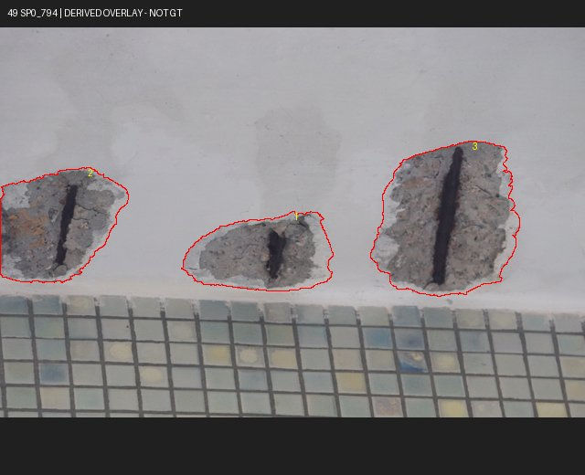
梁底三处缺损；可比较左右位置
机会：direct_target, position_reference
待复核焦点：cubit-v1/train/SP0_794/L0001/72f4c36425a39152
全部实例及歧义
cubit-v1/train/SP0_794/L0001/72f4c36425a39152
cubit-v1/train/SP0_794/L0002/fe66bdce69f53fa4
cubit-v1/train/SP0_794/L0003/1ae9780561b79115
class_mapping_unconfirmed, annotation_completeness_unknown, building_group_unknown, semantic_reference_unverified, thumbnail_only_review, same_building_possible, reference_not_annotated